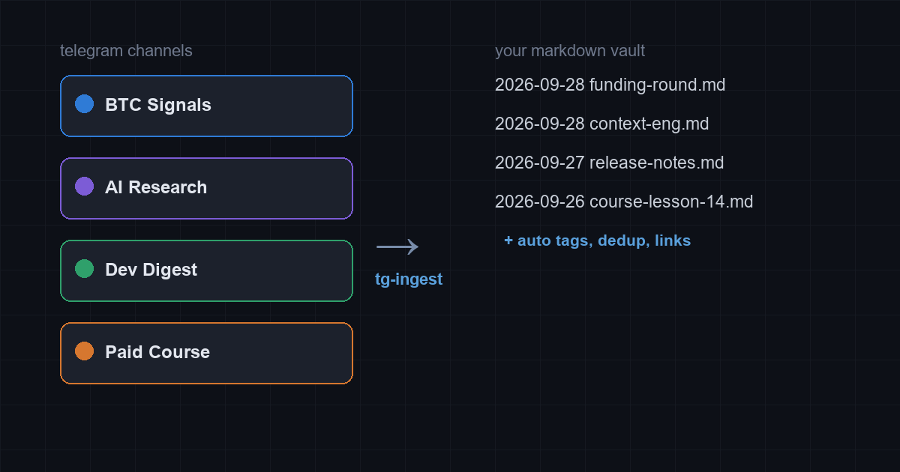

TG-Ingest is a bot that turns the channels you follow and the posts you save into clean markdown notes in your Obsidian or markdown vault. Auto-tagged, deduplicated, linked to source. Your best ideas stop evaporating in a chat scroll.

New posts from channels you choose arrive as dated markdown with source links and tags.
Your saved messages and forward-to-bot posts become part of the same searchable vault.
Dedup, summarization of long posts, images kept with context. Notes, not noise.
The bot doesn't exist yet. This page is an honest pre-order: if nobody wants it, I'll say so with the numbers and build something else.
For crypto, trading, indie research and paid courses, Telegram is the publication channel of record. But it stores nothing well: search is weak, history is a scroll, and the best post you read in March is unrecoverable by May. RSS bridges give you a firehose, not knowledge. Export tools are one-time and manual.
I built this for myself first: dozens of channels, one Obsidian vault, zero patience for copy-paste. The pipeline works on my machine. The product is packaging it so it runs for you.
1. You point the bot at channels you already have access to (public or your own private ones), plus your Saved Messages. 2. It fetches new posts, converts to markdown with frontmatter: source, author, date, tags. 3. Notes land in your vault (local folder sync or Git). Long posts get a TL;DR up top, images come through, duplicates are merged, edits tracked.
Hosting options: self-hosted (your machine, one-time price, source available) or hosted on my home server (subscription, you connect via bot token only). The bot can read nothing you didn't grant it access to, and I keep zero copies of your vault.
Telegram export is manual, RSSHub is raw and breaks, Zapier connectors cost $30/mo and produce worse notes than a grep pipeline. The last mile — clean, deduplicated, tagged markdown in YOUR vault — is exactly the boring part nobody ships. That's what I'm good at: I run AI agent pipelines as production systems, and this is one of them.
Waitlist opens with one question: what do you actually read on Telegram. At 30 signups I build the MVP (2-3 weeks). At 100 I add Notion export. If the list stays near zero, I publish the numbers, thank everyone, and move on. Either way you get updates, and the waitlist thread is public here on GitHub.